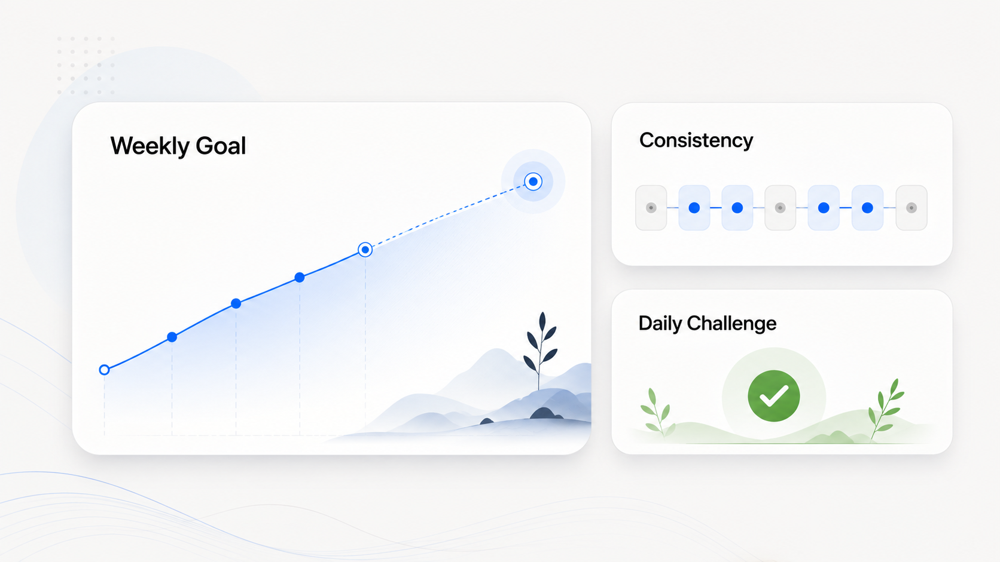

Anki gamification is useful when it turns an invisible long-term process into clear short-term feedback. A streak says “you returned.” A level says “your effort accumulated.” A challenge says “here is a small target for today.” None of those signals proves that learning happened — so they must be designed around the right behavior.
What gamification should do
Spaced repetition already contains delayed rewards: the payoff from today’s review may not be obvious until you remember the concept weeks later. Gamification can provide immediate feedback during that delay. Its job is to make the next useful action easier to begin.
A good system supports three things:
- Activation: opening Anki and beginning the first honest review.
- Consistency: returning regularly enough for the schedule to work.
- Completion: finishing a realistic plan without sacrificing accuracy.
Reward behaviors you actually want
| Reward this | Why | Avoid this |
|---|---|---|
| Starting a planned session | Reduces the biggest point of friction | Opening the app without reviewing |
| Completing a focus block | Connects progress with sustained attention | Raw minutes with the timer running in the background |
| Honest answer ratings | Protects scheduling quality | Bonuses for never pressing Again |
| A sustainable daily plan | Encourages repeatable workload | Unlimited points for maximum card volume |
| Returning after a missed day | Makes recovery part of the system | Punishing resets that trigger abandonment |
If points are tied only to cards reviewed, users can increase the score by rushing, choosing easy material, or avoiding the Again button. That is a successful game loop and a poor learning loop.

Use streaks without making them fragile
A streak is motivating because it makes consistency visible. It becomes harmful when protecting the number matters more than the study itself. Design the streak around a meaningful minimum: one completed review block or a realistic set of due cards, not a token click.
Also create a recovery rule. One missed day can become a visible pause rather than a total erasure of identity. The important signal is not perfection; it is the ability to resume.
Make levels represent accumulated effort
Levels work best as a slow background measure. They can combine completed focus blocks, consistent weeks, or review milestones, but they should not change how you rate cards. The level is a celebration of the process, not a target that overrides it.
Keep rewards mostly visual: a new badge, a progress animation, or a calmer dashboard milestone. If a reward changes the study workload, it can distort behavior.
Design useful daily challenges
A good challenge is specific, achievable, and aligned with the current queue. Examples:
- Complete one 25-minute focus block with notifications off.
- Finish today’s mature-card reviews before adding new cards.
- Repair five cards that produced repeated confusion.
- Return to a neglected deck for one short block.
- Review honestly and flag every ambiguous prompt.
Avoid challenges that reward a fixed high card count for everyone. A difficult anatomy deck and a familiar vocabulary deck create very different workloads.
Pair motivation signals with learning signals
Streaks, XP, and achievements tell you about behavior. Retention, Again rates, review time, and workload tell you more about the learning system. View both:
- If the streak rises while retention falls, sessions may be rushed.
- If review time grows sharply, cards may be unclear or the workload too large.
- If consistency is weak but retention is fine, reduce the barrier to starting rather than changing scheduling.
- If daily goals are always exceeded, they may be too easy to guide behavior.
Use our guide to Anki retention statistics before changing deck settings based on a motivational dashboard.
A seven-day gamification experiment
- Choose one behavior to strengthen: starting, focusing, or returning.
- Set one minimum action that is small but meaningful.
- Add one visible signal, such as a streak or completed-block counter.
- Do not reward answer-button choices or speed.
- Use the same rule for seven days.
- At the end, ask whether the signal helped you begin and whether review quality stayed stable.
If the system creates guilt, compulsive checking, or rushed answers, simplify it. Gamification should reduce resistance, not add another obligation.
Choosing an Anki gamification addon
Look for controls that let you keep the feedback subtle, goals that reflect your actual study plan, and clear separation between motivational points and Anki’s scheduling. An integrated addon can connect focus blocks, planning, and progress without forcing you to maintain several separate systems.
For the broader decision, see our framework for choosing the best Anki addons.
Make progress visible, not noisy.
SynapsePro combines levels, streaks, daily challenges, focus tools, and study planning inside a calm Anki workspace.
Get SynapsePro free